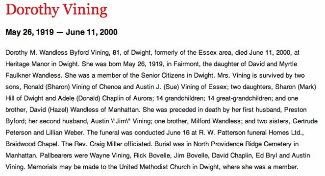
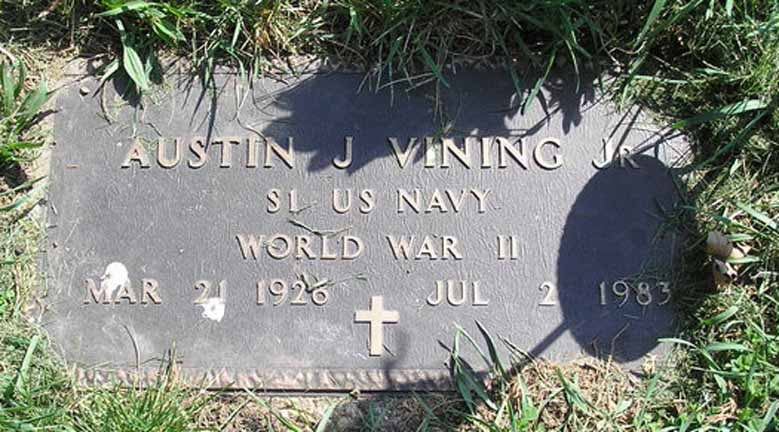
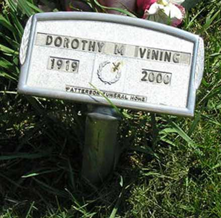

Documentation for Austin James Vining Jr. - Dorothy M. Wandless (Byford)
Death Data
Obituary for Dorothy M. Wandless (Byford), wife of Austin James Vining Jr.:

Gravestones for Austin James Vining Jr. and Dorothy M. Wandless (Byford), his wife, in North Providence Ridge Cemetery, Elwood, Illinois (source: Find A Grave):

